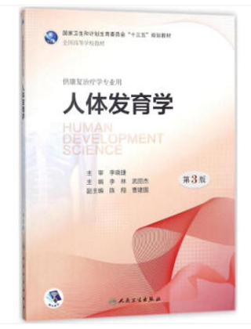

主页
门诊时间
学术科研
实验室成员
科学博文
曹建国(Jianguo Cao)
深圳儿童医院(Shenzhen Children's Hospital)
康复科(Physiatry, Pediatrics)
学术论文
黄美欢,曹建国,韩春锡,付桂兵,郑跃杰. 脊髓性肌萎缩症的诊断及多学科综合管理进展[J]. 中华物理医学与康复杂志,2020,42(7):665-670
链接
Huang M, Cao J, Sun J, et al. Cross-cultural Adaptation and Multi-centric Validation of the Motor Function Measure Chinese Version (MFM-32-CN) for Patients with Neuromuscular Diseases[J]. Developmental Neurorehabilitation, 2020, 23(4): 210-217.
Link
陈莹津,曹建国. 孤独症谱系障碍儿童的康复干预模式[J]. 中国实用儿科杂志,2019,34(08):652-655+665.
链接
贠国俊,吴寿桐,曹建国,刘青,杨雪,黄美欢. 体外冲击波用于改善痉挛型脑性瘫痪患儿蹲伏步态的临床研究[J]. 中国康复医学杂志,2018,33(01):63-67.
链接
黄美欢,曹建国,贠国俊,周春明. 肌内效贴在脑瘫儿童康复中的应用进展[J]. 中国康复医学杂志,2016,31(01):102-105.
链接
张淑莲,王晋清,曹建国,聂天庆,刘秀平. 脐血NSE、TNF-α与VEGF测定早期预测脑性瘫痪高危儿[J]. 中国妇幼保健,2010,25(03):404-406.
链接
卢红云,曹建国,郭新志. 发音器官运动障碍矫治结合构音训练治疗脑瘫儿童言语障碍疗效分析[J]. 中国康复医学杂志,2004(12):18-20.
链接
曹建国,郭新志. 小儿脑性瘫痪的研究进展[J]. 中国临床康复,2002(01):87.
链接
曹建国,郭新志,何晓蕊,卢红云. 脑性瘫痪合并症的临床研究[J]. 中国康复医学杂志,2001(01):21-23.
链接
教材编著
人体发育学
链接
